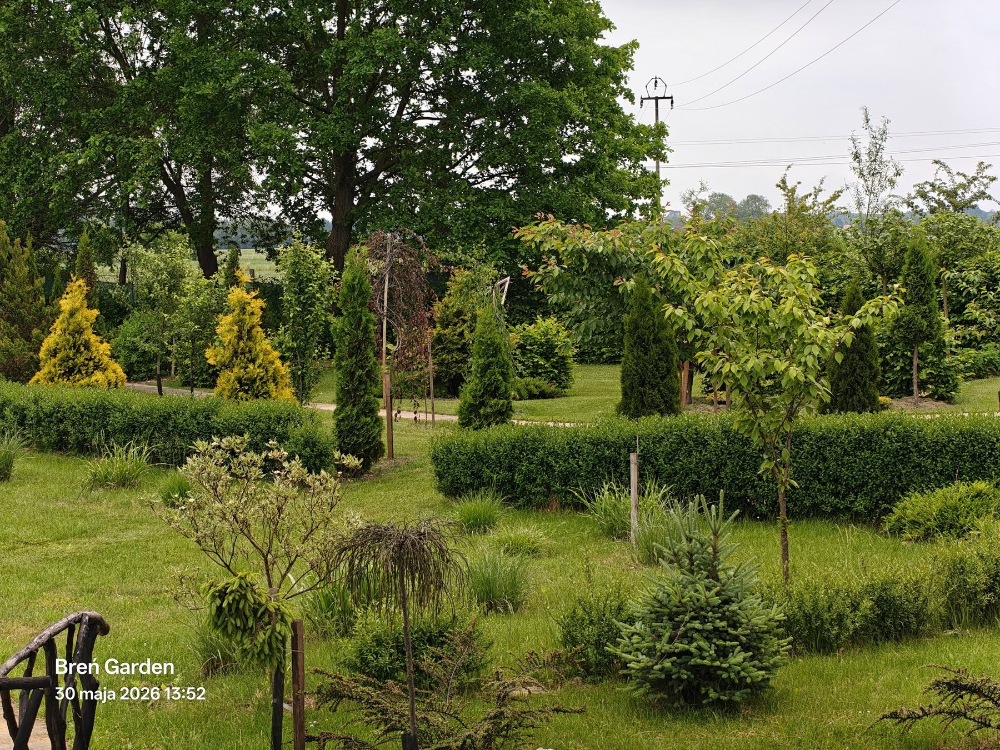

Dla dzieci
Prosty opis, zagadka i ciekawostka: „znajdź ptaka z najdłuższym ogonem” albo „poszukaj trawy, która wygląda jak fontanna”.
nowoczesny pomysł
Przy roślinie, ptaku, rzeźbie albo punkcie foto stoi tabliczka. Gość skanuje kod i dostaje opis, ciekawostkę, zdjęcia oraz lektora AI.


Punkt 12 • roślina ozdobna
Miękka, falująca trawa ozdobna, która pięknie pracuje na wietrze i tworzy naturalne tło do zdjęć.
jak to działa?
Prosty opis, zagadka i ciekawostka: „znajdź ptaka z najdłuższym ogonem” albo „poszukaj trawy, która wygląda jak fontanna”.
Krótki, konkretny opis rośliny, pochodzenie, wymagania, termin kwitnienia, cechy ozdobne i ciekawostki.
Panel do dodawania punktów, generowania QR, wrzucania zdjęć, audio i sprawdzania, które punkty są najczęściej skanowane.